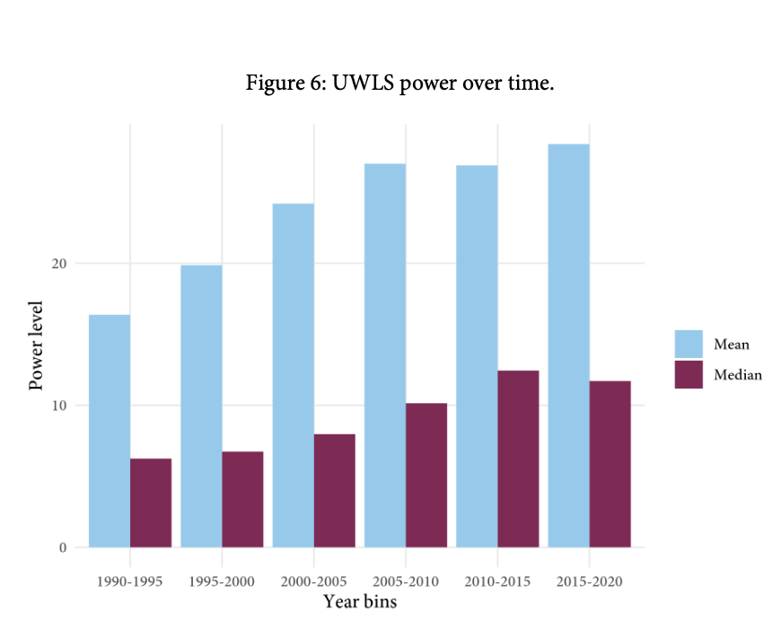
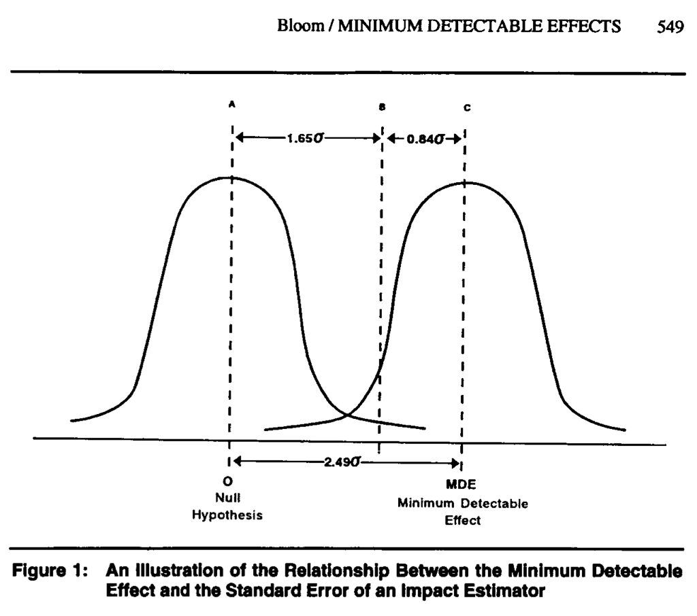
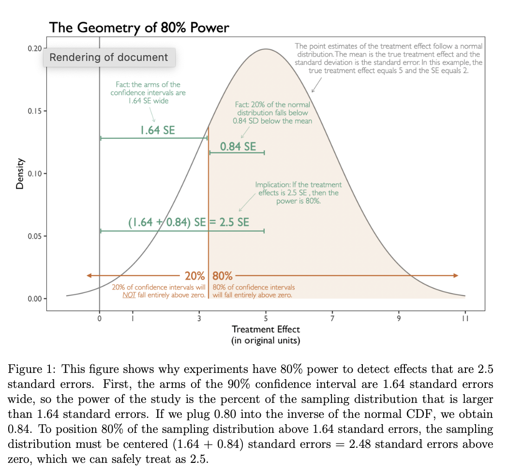
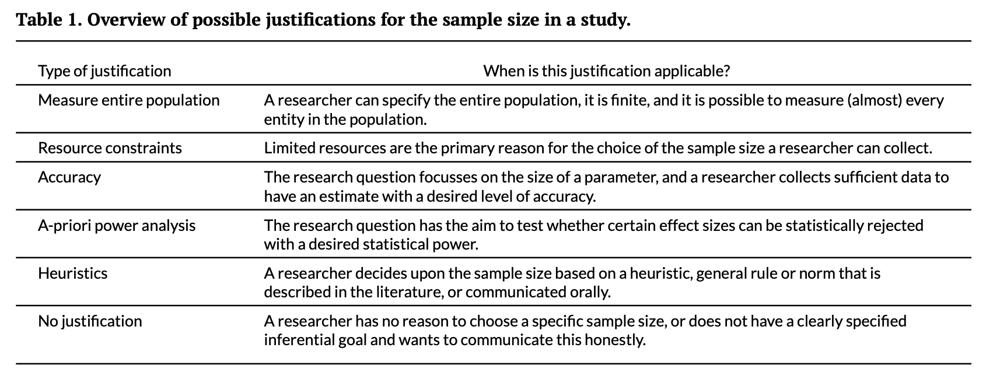
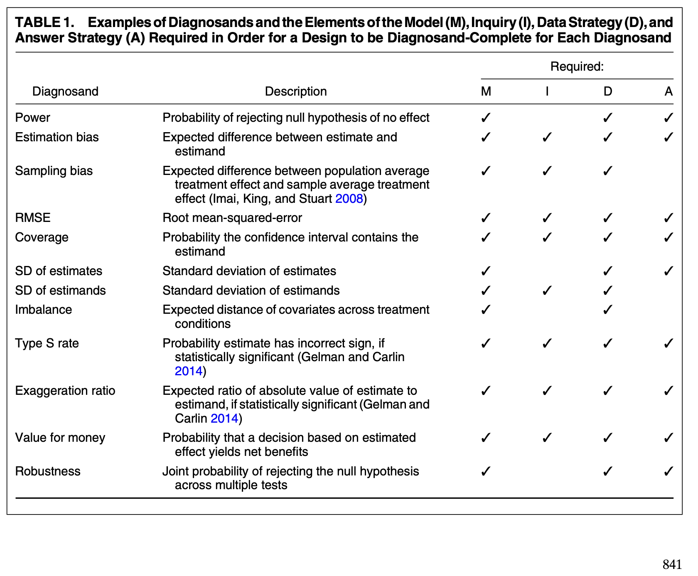

For Your Syllabus: Statistical Power
Readings on power analysis, MDEs, sample size planning, and research design diagnostics
As you prepare your courses on quantitative methods, consider including a section on statistical power.
Here are five readings I like and often recommend.
Quantitative Political Science Research is Greatly Underpowered (Arel-Bundock et al.)
This paper shows that low power is a real problem—“doing what others have done” does not guarantee a well-powered study for the true effect. Instead, power requires some thinking!
From the abstract:
> “Only about 1 in 10 tests have at least 80% power to detect the consensus effects reported in the literature.”
- 🔗 Journal DOI (JOP): https://doi.org/10.1086/734279
- 🔗 Preprint DOI (OSF): https://doi.org/10.31219/osf.io/7vy2f

Minimum Detectable Effects (Bloom 1995)
Instead of focusing on power curves or abstract probabilities, Bloom asks a concrete question: “What’s the smallest effect this design could reliably detect?”
The paper: - Defines the minimum detectable effect (MDE) clearly
- Provides formulas and tables to compute it
- Explains how design choices affect statistical power
- 🔗 Journal DOI: https://doi.org/10.1177/0193841X9501900504
- 🔗 PDF: https://sites.uci.edu/gduncan/files/2021/03/Bloom-MDES-Eval-Rev-1995-Bloom.pdf

Power Rules
My (unpublished) paper updates Bloom’s ideas. Especially for political scientists or others using OLS and robust SEs, this paper may be useful.
It: 1. Builds intuition for power
2. Develops simple rules for back-of-the-envelope power calculations
3. Describes how to incorporate pilot data into power calculations
- 🔗 Preprint DOI (OSF): https://doi.org/10.31219/osf.io/5am9q

Sample Size Justification (Lakens 2022)
Power is just one way to justify sample size. This paper offers a broader framework to align your design with your research goals.
Lakens outlines six common justifications: 1. Collecting data from (almost) the entire population
2. Choosing a sample size based on resource constraints
3. Performing an a-priori power analysis
4. Planning for a desired accuracy (e.g., CI width)
5. Using heuristics (e.g., 30 per group)
6. Explicitly acknowledging the absence of a justification
- 🔗 Journal DOI (open): https://doi.org/10.1525/collabra.33267

Declaring and Diagnosing Research Designs (Blair et al. 2019)
The authors introduce a much more general way to think about designs. They propose the MIDA framework:
Model: Assumptions about how the world works
Inquiry: The specific question being asked
Data Strategy: The plan for collecting data
Answer Strategy: The method to answer the inquiry
🔗 Journal DOI (open): https://doi.org/10.1017/S0003055419000194
📚 Book (open): https://book.declaredesign.org/
💻 R package site: https://declaredesign.org/r/declaredesign/

Closing
These five readings complement each other really well. Students have a lot to gain from each.
| Paper | Value |
|---|---|
| Arel-Bundock et al. | Shows that most political science studies are underpowered; demonstrates the importance of thinking carefully about design. |
| Bloom (1995) | Defines the minimum detectable effect (MDE) and explains how design choices influence power. |
| Rainey | Provides intuitive rules of thumb for power analysis, including using pilot data. |
| Lakens (2022) | Broadens the discussion; outlines six ways to justify sample size beyond traditional power analysis. |
| Blair et al. (2019) | Introduces the MIDA framework for formally declaring and diagnosing research designs. |